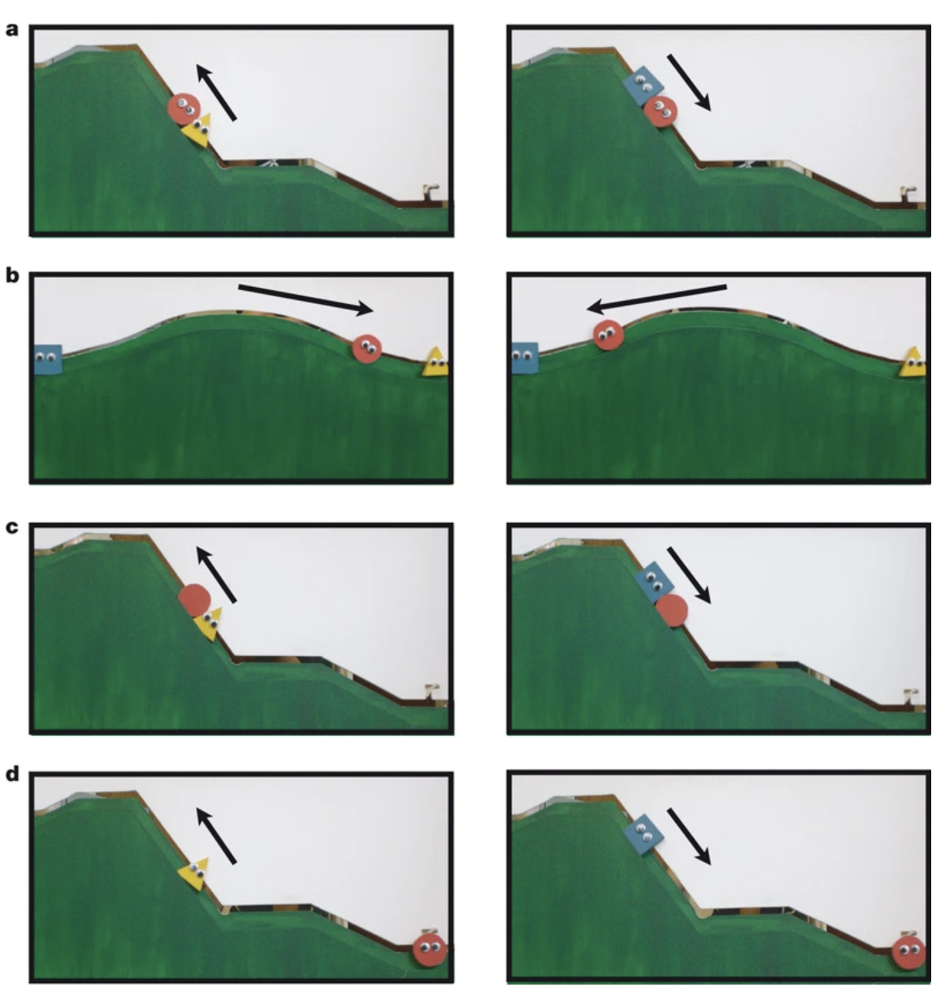
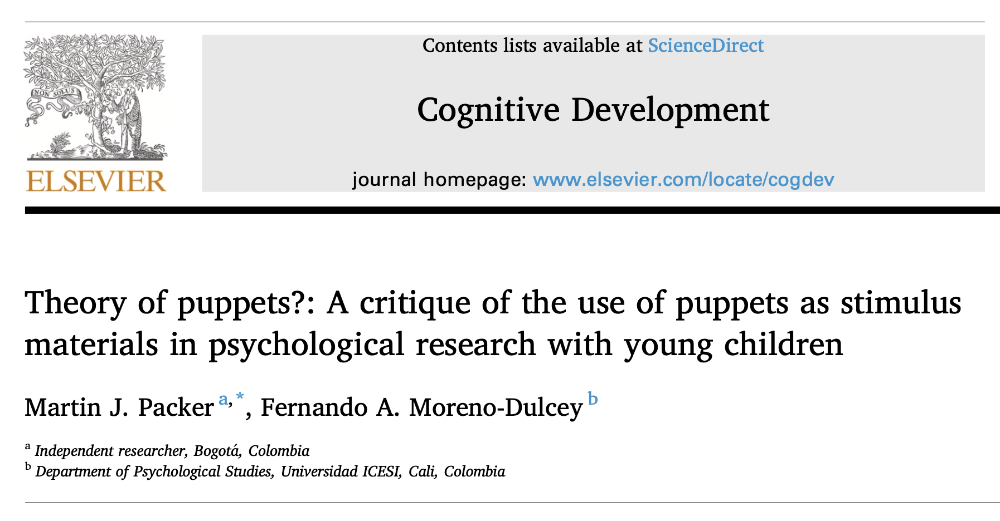
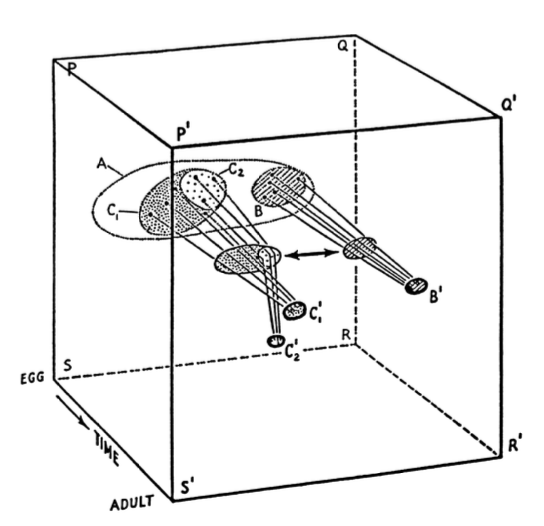
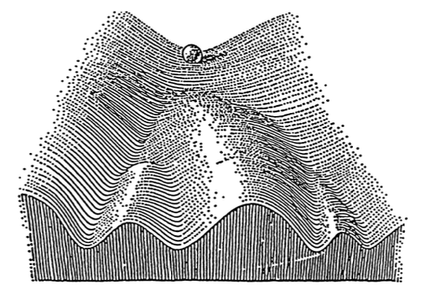
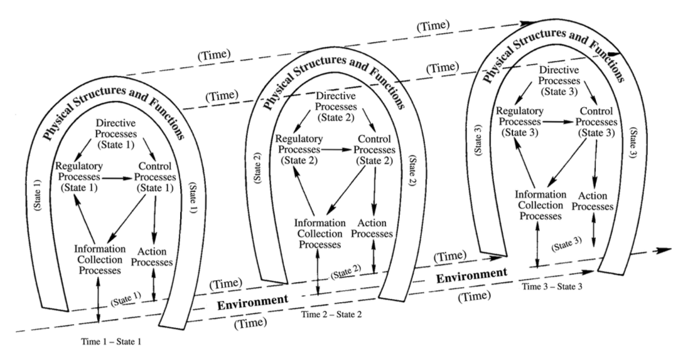
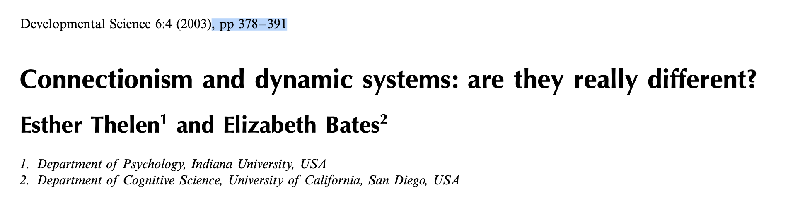
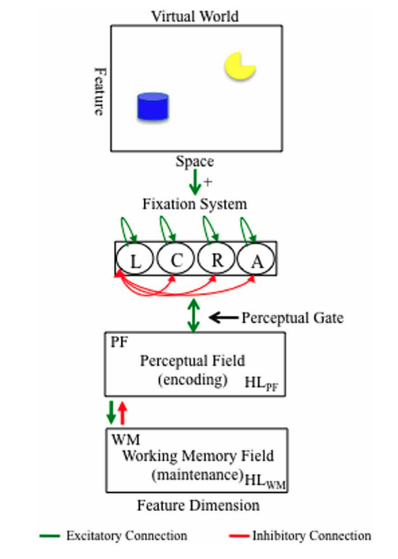
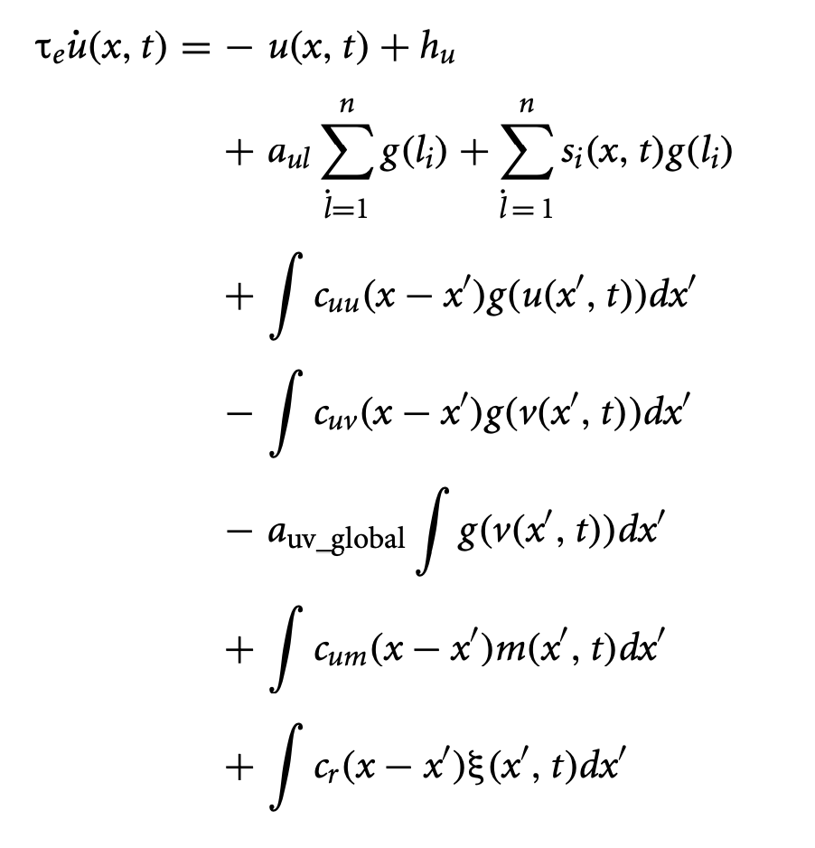

Dynamic(al) systems
2025-10-17
Department of Psychology
Prelude
Today’s topics
- Risks of generalization
- Dynamic systems
Risks of overgeneralization
Hamlin, Wynn, & Bloom (2007)
Figure 1 from Hamlin et al. (2007)
Hamlin et al. (2007)
Hamlin et al. (2007)
Here we show that 6- and 10-month-old infants take into account an individual’s actions towards others in evaluating that individual as appealing or aversive: infants prefer an individual who helps another to one who hinders another, prefer a helping individual to a neutral individual, and prefer a neutral individual to a hindering individual.
Hamlin et al. (2007)
Here we show that 6- and 10-month-old infants take into account an individual’s actions towards others in evaluating that individual as appealing or aversive: infants prefer an individual who helps another to one who hinders another, prefer a helping individual to a neutral individual, and prefer a neutral individual to a hindering individual.
Hamlin et al. (2007)
Our findings indicate that humans engage in social evaluation far earlier in development than previously thought, and support the view that the capacity to evaluate individuals on the basis of their social interactions is universal and unlearned.
Hamlin et al. (2007)
Our findings indicate that humans engage in social evaluation far earlier in development than previously thought, and support the view that the capacity to evaluate individuals on the basis of their social interactions is universal and unlearned.
Lucca et al. (2025)
Lucca et al. (2025)
A seminal study by Hamlin and colleagues in 2007 suggested that the ability to form social evaluations based on third-party interactions emerges within the first year of life: infants preferred a character who helped, over hindered, another who tried but failed to climb a hill.
Lucca et al. (2025)
This sparked a new line of inquiry into the origins of social evaluations; however, replication attempts have yielded mixed results.
Lucca et al. (2025)
We present a preregistered, multi-laboratory, standardized study aimed at replicating infants’ preference for Helpers over Hinderers.
Lucca et al. (2025)
Using the ManyBabies framework for big team-based science, we tested 1,018 infants (567 included, 5.5–10.5 months) from 37 labs across five continents…
n’s in Hamlin et al. (2007)
- Ex 1: n=12 6-mo-olds, n=16 10-mo-olds
- Ex 2: n=12 6-mo-olds, n=12 10-mo-olds
- Ex 3: n=8 6-mo-olds, n=8 10-mo-olds
Lucca et al. (2025)
Overall, 49.34% of infants preferred Helpers over Hinderers in the social condition, and 55.85% preferred characters who pushed up, versus down, an inanimate object in the nonsocial condition; neither proportion differed from chance or from each other.
Lucca et al. (2025)
This study provides evidence against infants’ prosocial preferences in the hill paradigm, suggesting the effect size is weaker, absent, and/or develops later than previously estimated.
Yes, and…
Packer & Moreno-Dulcey (2022)
Packer & Moreno-Dulcey (2022)
A ’social stimulus’ is one introduced by the behavior of another person. But the stimuli described in this paper are produced not by another person but by a facsimile thereof. Hence they are identified as ‘symbolic’ social stimuli.
– Lovaas, Baer, & Bijou (1965) cited in Packer & Moreno-Dulcey (2022)
Packer & Moreno-Dulcey (2022)
- Are abstract shapes, puppets, etc. social stimuli to children?
- Do researchers assume children are willing to pretend that they are?
- Consequences vs. studying social cognition using real people?
Packer & Moreno-Dulcey (2022)
…treating symbolic social stimuli as though they are real can cause problems. It may be unfair to suggest that such research amounts to the study of children’s “theory of puppets…”
but it seems equally inaccurate to say that it is an adequate study of either children’s theory of mind or their understanding of the deontology of the social world.
Kominsky et al. (2022)
Simplified stimuli allow for stronger experimental control and therefore more precise inferences compared to more complex, uncontrolled, naturally occurring events…
Kominsky et al. (2022)
Ultimately, we conclude that while concerns about the validity of experiments using simplified stimuli are founded, results from such studies should not be dismissed purely on ecological grounds.
Yarkoni (2020)
Dynamic(al) systems
What are they?
- Mathematical models
- Systems of differential equations (equations involving derivatives)
- Describe changes of a state space over time
Lorenz system
\[\dot{x} = \sigma(y-x) \] \[\dot{y} = \rho x - y - xz \] \[\dot{z} = -\beta z + xy \]

Double pendulum]
Aspects of dynamical systems
- Self-organization
- Attractors
- Stable
- Unstable
– Wikipedia contributors (2025d)
Aspects of dynamical systems
- Non-linearity
- Sensitivity to initial conditions
- Bifurcation points
- Change behavior with change in parameter
Motivation
[T]he induction of novel behavioral forms may be the single most important unresolved problem for all of the developmental sciences.
Inspirations


Inspirations
Thelen & Bates (2003)


Core question:
Thelen & Bates (2003)
Thelen & Bates (2003)
Connectionism == Dynamic systems?
Based on the theoretical taxonomy in Table 1, and our own discussions of it, we have reached the conclusion that connectionism and dynamic systems are not competing theories of development.
– Thelen & Bates (2003)
Conclusion
But at a more general theoretical level, there are far more shared assumptions than real differences. They are both really two aspects of a new, synthetic theory of development…
– Thelen & Bates (2003)
Dynamic Systems Theory (DST)
- Perone & Simmering (2017)
- Multicausality
- Self-organization
- Nested time-scales
Perone & Simmering (2017)
- Describe measurable behavior
- Dynamic Field Theory (DFT) extends DST to neural fields
An illustrative DF model
- Fixation system
- Perceptual field
- Excitatory layer
- Inhibitory layer
- Working memory field

Model dynamics: Perceptual field
- Past states influence future
- Excitatory input (Gaussian-weighted)
- Inhibition: Local (Gaussian-weighted) + global
- Memory (Hebbian)
- Noise

Model equations
Model behavior

Perone & Spencer (2013)
Challenges
- How quantitative should (must?) we be?
- Weaker vs. stronger predictions based on level of measure

Challenges
Challenges
- Measure with sufficient temporal density?
- Degrees of freedom: In data, in models1
- Model robustness
- Virtues of “neural-like” models? Flaws?
All models are wrong…
- but some are useful (Wikipedia contributors, 2025b)
- Explanatory power vs. parsimony
Future prospects
On the basis of history, current proclivities of active researchers, and current quantitative training of psychology students, my bet would have to be that this approach will probably fade from the scene or at best remain a little island of activity restricted to a small group of interested parties. (This is the kind of remark that gets quoted and snickered at 20 years later when the approach is flourishing) (p. 314).
Next time…
- Emergentism & dynamic systems: Deep dive
- Student Presentation G: A connectionist model to explain why infants seem so smart
- Read: Munakata, McClelland, Johnson, & Siegler (1997) (Presenter: Zeynep Sülün; Discussant: Caesar Liu)
- Student Presentation H: Emergentism and variants of the A-not-B task
- Read: Smith, Thelen, Titzer, & McLin (1999) (Presenter: Natalie Byrd; Discussant: Jiayi Fan)
- Student Presentation G: A connectionist model to explain why infants seem so smart
Resources
About
This talk was produced using Quarto, using the RStudio Integrated Development Environment (IDE), version 2025.5.1.513.
The source files are in R and R Markdown, then rendered to HTML using the revealJS framework. The HTML slides are hosted in a GitHub repo and served by GitHub pages: https://psu-psychology.github.io/psy-548-fall/